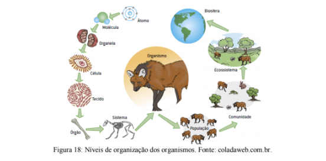

Capítulo 3
NÓS SOMOS ANIMAIS: COMO AS TECNOLOGIAS DA INDÚSTRIA CALÇADISTA PODEM SER UM EXEMPLO POSITIVO DE ÉTICA AMBIENTAL
Vamos questionar:As primeiras populações humanas transformaram as peles dos animais caçados em matéria- prima para a produção de vestuário. Por muito tempo era essa a tecnologia disponível. Com o desenvolvimento de materiais de origem vegetal e sintéticos o abate de animais para a confecção de roupas e acessórios deixou de ser uma necessidade e se transformou em uma escolha de moda bastante ligada ao status socioeconômico.
O uso de peles se tornou um problema quando animais selvagens começaram a serem caçados em massa para o uso do couro em casacos, sapatos, bolsas, etc (figura 13).

Existe uma questão ética a ser resolvida nesse exemplo: é válido abater animais para suprir um desejo estético das pessoas? Para atender a essa demanda estética e ambiental várias pessoas se dedicaram a desenvolver alternativas sustentáveis ao couro legítimo, que já estão disponíveis no mercado.
Mesmo assim, ainda existem pessoas que consomem couros e peles de origem animal tanto de forma legal quanto ilegal. Além disso, várias crenças populares levam ao abate de animais como tubarões, rinocerontes, elefantes, etc. para que se faça uso de itens que supostamente têm poderes mágicos ou curativos.
ContextualizandoDentro do sistema de classificação dos seres vivos, nós, seres humanos, fazemos parte do Reino Animalia, pois somos pluricelulares (várias células no corpo), heterótrofos (nos alimentamos de outros seres vivos) com células organizadas em tecidos, ou seja, somo animais.
É verdade que para nos mantermos vivos necessariamente teremos que causar a morte de outros seres, pois nos alimentamos deles. Entretanto, isso não significa que não podemos buscar meios alternativos para diminuir nosso impacto sobre o planeta.
Existem dois elementos distintos sobre esse problema: a criação de espécies para abate e caça ilegal de animais selvagens. A caça ilegal pode levar a mudanças ecológicas severas e é uma das grandes ameaças às espécies animais.
Acesse o vídeo clicando no link a seguir:
Ao longo da evolução humana, a inteligência permitiu às pessoas modificar e controlar diversos processos da natureza. Ao invés de depender das estações e da dinâmica das populações de presas, as populações humanas desenvolveram a agricultura e domesticaram diversos animais. Esse processo acabou "afastando" a humanidade da natureza e a integração com os processos do ambiente em alguns casos se transformou em algo pejorativo. Esse afastamento se transformou em um traço muito forte de algumas culturas e a clareza de que dependemos dos processos ecológicos foi perdida. E muitas pessoas não aceitam que façamos parte do reino dos animais.
O Reino Animalia, ou simplesmente Reino Animal, é constituído por seres vivos pluricelulares eucariontes e heterótrofos. É um grupo bastante antigo (surgido a aproximadamente 700 milhões de anos) com mais de 1 milhão de espécies já descritas pela ciência, incluindo organismos de formas, tamanhos e hábitos tão diversos quanto um mosquito e uma baleia. Todos têm capacidade de realizar reprodução sexuada e alguns grupos também se reproduzem assexuadamente. A locomoção é uma característica importante da grande maioria dos animais que, em geral, são dotados de musculatura especializada e apêndices (como braços, patas e pernas) próprios para este fim.
O modo característico pelo qual os animais obtém seu alimento é através da ingestão de outros organismos ou partes deles. Apresentam, contudo, formas de alimentação muito variadas. Ao contrário das plantas, não têm capacidade de sintetizar seu próprio alimento a partir de componentes abióticos. Alguns se alimentam direta e exclusivamente de vegetais, outros predam apenas animais e, os mais generalistas, alimentam-se de ambos.
Habitam quase todos os ambientes do planeta. A maioria dos filos está restrita aos ambientes aquáticos, especialmente nos mares e oceanos. Apesar da grande diversidade animal, alguns critérios servem para agrupá-los de acordo com o grau de parentesco evolutivo. Componentes importantes nessa análise são basicamente os caracteres anatômicos e embriológicos (relacionados ao desenvolvimento do embrião).
PARA ENTENDER MAIS...
A relação entre os ancestrais e descendentes nos grupos de seres vivos, ou seja, o parentesco evolutivo é representado em diagramas de árvores, chamadas de filogenias. Abaixo podemos conhecer a filogenia do Reino Animalia (figura 14).
Como se lê uma filogenia? Quanto menos bifurcações nas linhas que unem dois grupos mais aparentados eles são. Novidades evolutivas, ou seja, características que não existiam em nenhum ser vivo até aquele momento são marcadas por pontos vermelhos (no caso da filogenia acima). Dessa forma, podemos afirmar que os Platelmintos são mais aparentados com os Moluscos do que com os Artrópodos, mas que os três possuem um blastóporo que origina a boca.
Exercite isso: qual característica apenas os Cordados possuem? Quem são os parentes mais próximos dos Equinodermos?
Umas das formas de agrupar os animais é pela presença ou ausência de vértebras. Os invertebrados são animais que não possuem esqueleto ósseo, o corpo pode ser mole como nos Anelídeos (minhocas), protegido por um exoesqueleto (esqueleto externo) como é o caso dos Artrópodes (insetos, crustáceos, etc), ou mesmo por uma concha nos Moluscos (caracóis, mexilhões, lulas).
Acesse o vídeo clicando no link a seguir:
Os vertebrados são animais dotados de esqueleto interno com uma coluna vertebral segmentada (vértebras) e com um crânio que protege o cérebro. Nós, humanos, somos vertebrados. Fazemos parte da Classe dos Mamíferos e compartilhamos esse Filo com peixes, aves, répteis (cobras, lagartos, tartarugas anfisbenas) e anfíbios (sapos, rãs, pererecas).
VOCÊ SABIA?
VOCÊ SABE O QUE É VEGANISMO?
Apesar da relação da humanidade com os outros animais ser bastante antiga, algumas pessoas criticam a indústria da produção de alimentos e outros itens de origem animal. Este grupo de pessoas são os veganos. O veganismo não é apenas vegetarianismo, e sim, um estilo de vida.
Segundo a The Vegan Society, da Inglaterra, mais antiga entidade vegana do mundo, "o veganismo é uma forma de viver que busca excluir, na medida do possível e do praticável, todas as formas de exploração e de crueldade contra animais, seja para a alimentação, para o vestuário ou para qualquer outra finalidade. Dos veganos junk food aos veganos crudívoros – e todos mais entre eles – há uma versão do veganismo para todos os gostos. No entanto, uma coisa que todos nós temos em comum é uma dieta baseada em vegetais, livre de todos os alimentos de origem animal, como: carne, laticínios, ovos e mel, bem como produtos como o couro e qualquer produto testado em animais."
O aumento no número de pessoas que adotam o estilo de vida vegano tem impulsionado esse mercado (figura 15), consequentemente, cada vez mais marcas oferecem produtos que não possuem origem animal e tampouco foram testados em animais. Uma série de tecnologias alternativas vêm sendo desenvolvidas, como o couro vegano, um substituto sintético para o couro legítimo, citado no início deste capítulo.

AÇÃO E REFLEXÃO
O título desse capítulo faz uma sugestão: as tecnologias da indústria calçadista podem ser um exemplo positivo de ética ambiental.
A ética ambiental é uma conceito que propõe que todas as nossas ações levem em consideração a espécie humana, mas também todas as outras espécies de seres vivos. Está bastante relacionada ao conceito de sustentabilidade.
Sabendo disso, proponha diferentes formas pelas quais a indústria calçadista pode contribuir de forma positiva para o desenvolvimento sustentável?
O QUE APRENDI
O ser humano muitas vezes consome produtos sem saber ou se preocupar com sua origem e composição. Alguns produtos de origem animal podem ter sido obtidos de forma ilegal ou cruel. O desenvolvimento de tecnologias alternativas ao uso de animais e a fiscalização de origem é extremamente importante para garantir a preservação das espécies animais
Há muito tempo o ser humano mantém relações com os outros animais. Com a criação da agricultura e da pecuária, as plantas e os animais passaram a nos fornecer outros itens como leite, couro, mel, de grande valia para a nossa sobrevivência e desenvolvimento inicial como sociedade.
Os animais representam um grupo muito numeroso de seres vivos. Existem animais em todos os lugares, adaptados a todas condições climáticas da Terra.
Dentre os grupos mais numerosos destacam-se o Filo dos Artrópodos, que inclui os insetos, aracnídeos e os crustáceos, de grande valor econômico (abelhas, camarões e lagostas).
O Filo dos Cordados, ao qual pertencemos, inclui organismos de grande relevância na nossa dieta alimentar (peixes, aves, mamíferos).
O veganismo é um estilo de vida que condena o uso de animais para suprir as necessidades humanas e tem impulsionado o desenvolvimento de alternativas para a subsistência humana.